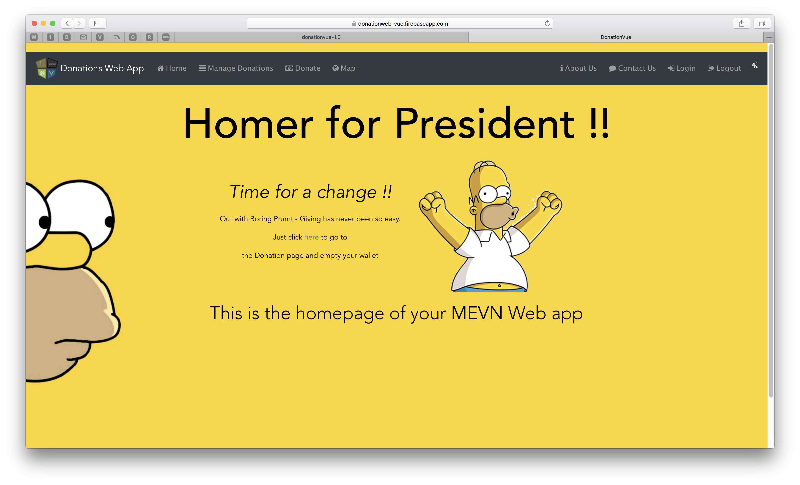
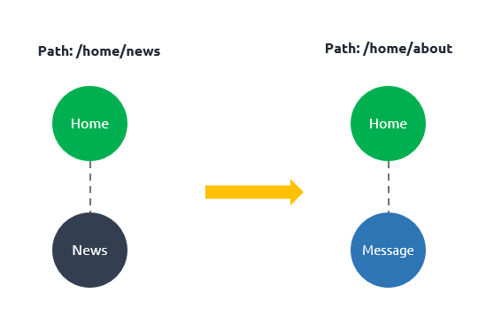
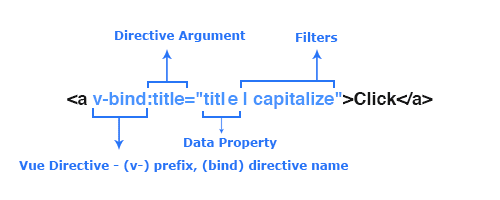
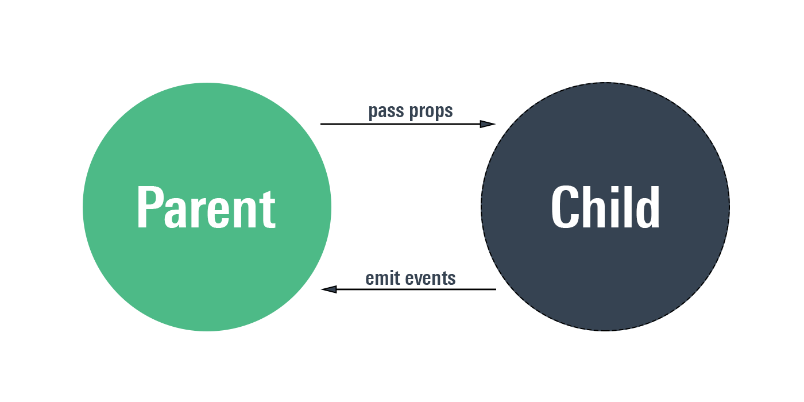
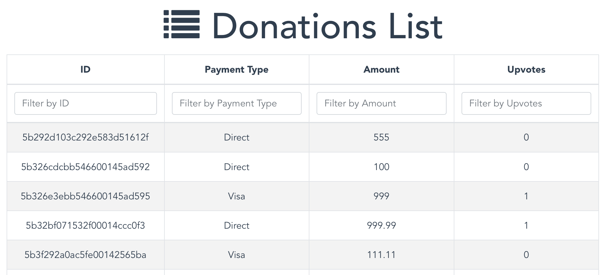
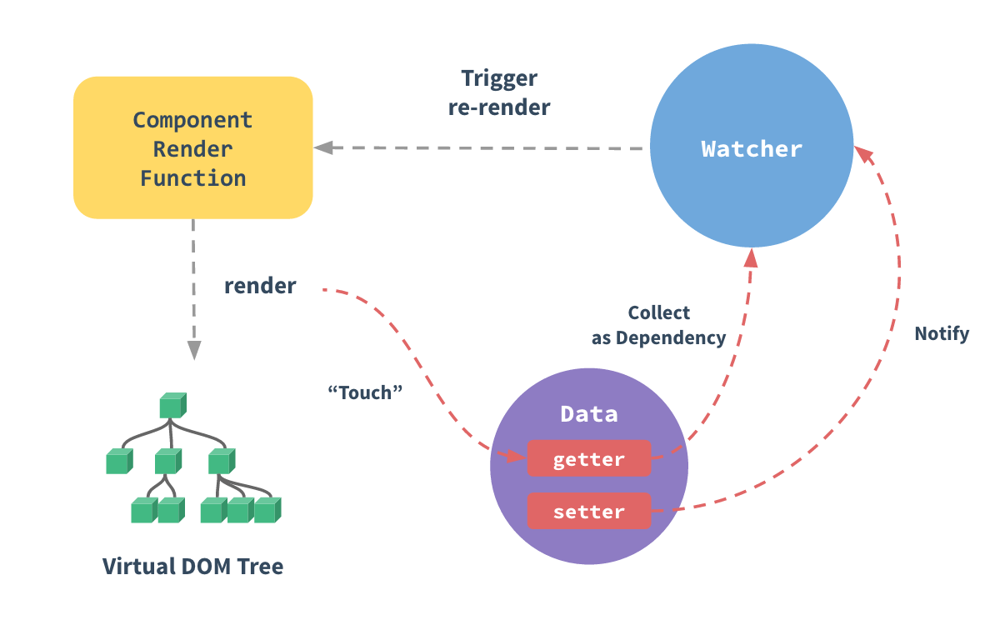
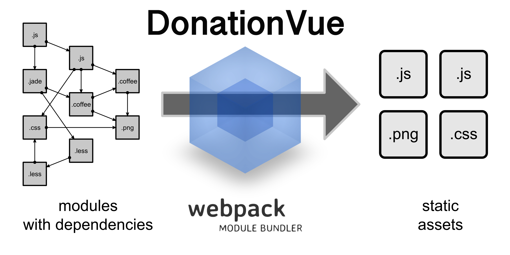

Assignments Specification
Assignment-1
Assignment-2
Overview & Background
Module Overview
Introduction to Web Apps
Introduction & Background
JavaScript Overview
Introdcution to REST
Web Apps Overview
Setup
JS.Lab-01
JS.Lab-02
Web App Development
Node JS
Node - Part 1
Node - Part 2
Lab-01
Lab-02
Node, MongoDB & Mongoose
Node - Part 3
Lab-03
Deploy-to-heroku
Vue JS - Introduction, Overview & Core Features
Introduction
Rendering & Reactivity
Components
Lab-Vue-01
Vue JS - Routing, Directives & Event Handling
Routing
Directives
Event Handling
Lab-Vue-02
Lab-Vue-03
Vue JS - Filters, Computed Values, Watchers & Transitions
Filters
Computed Data & Watchers
Transitioning Effects
Deploy-to-Firebase
Vue JS - Supplementary Material
Vue & webpack
RESTful APi & Axios
Web App Development 2
All slides's in Module
Assignment-1
Assignment-2

Module Overview
JavaScript Overview
Introdcution to REST
Web Apps Overview
Node - Part 1
Node - Part 2
Node - Part 3
Introduction
Rendering & Reactivity
Components
Routing

Directives

Event Handling

Filters

Computed Data & Watchers

Transitioning Effects
Vue & webpack

RESTful APi & Axios